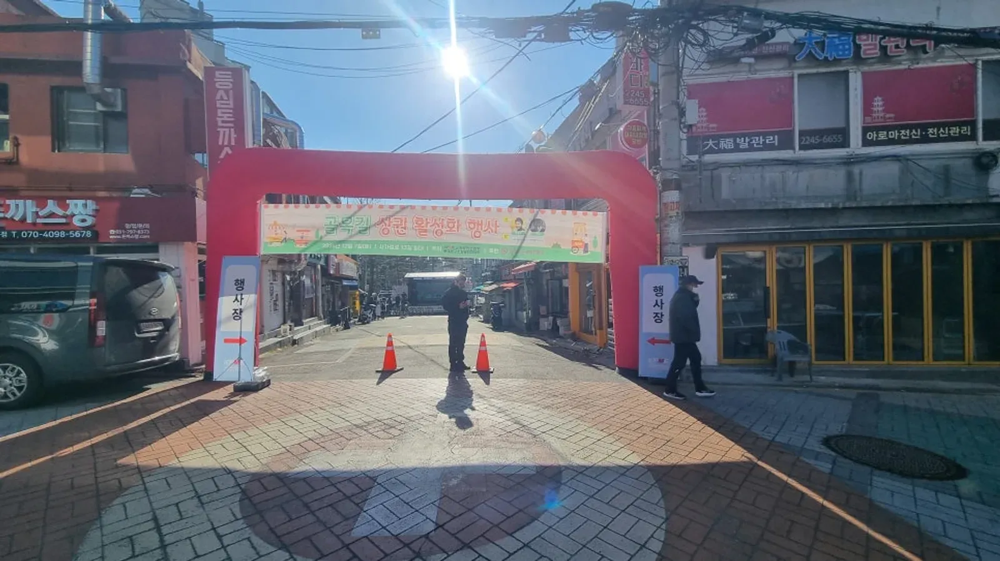
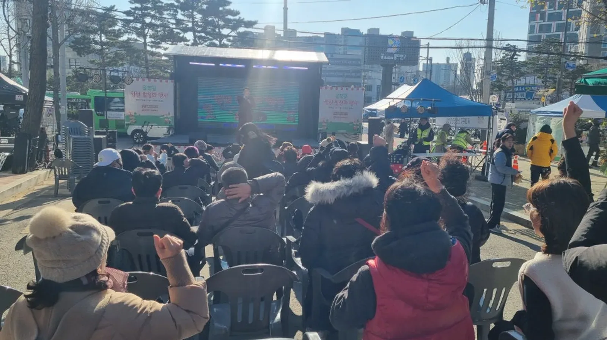
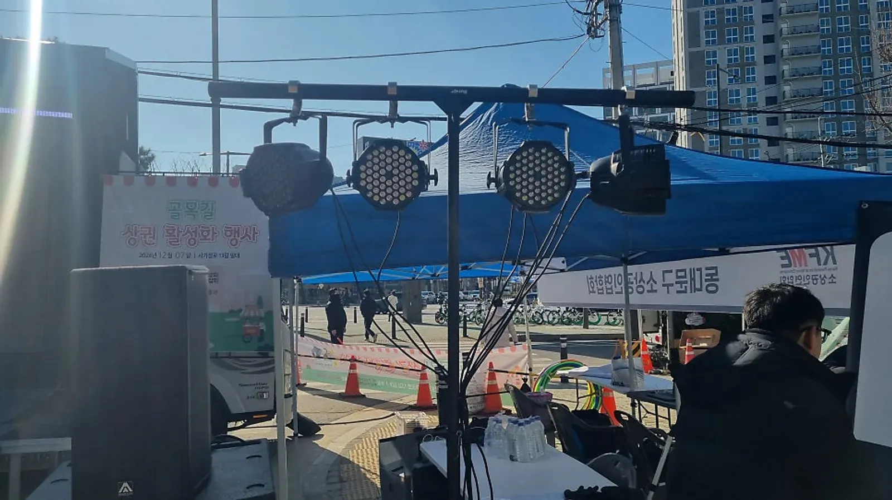

동대문 행사 준비 · 2026년 10월 28일
동대문 상권 활성화 축제 준비 — 거리 무대 · 안전 · 프로그램
동대문 상권 활성화 축제는 거리에서 열리는 만큼 무대보다 길을 먼저 정해야 합니다. 차량을 어디서 막고, 손님이 어디로 들어와 어디서 머무를지가 정해지면 무대 · 부스 · 객석 자리는 저절로 나옵니다. 힐링엔터테인먼트가 동대문에서 진행한 전농동 골목 상권 활성화 축제를 바탕으로 준비 순서를 정리했습니다.

- 거리 축제는 차량 통제 구간과 입구를 먼저 정하고, 그 안에 무대 · 부스 · 객석을 배치합니다.
- 전농동 골목 상권 활성화 축제는 플리마켓 · 체험존 · 문화 공연 · 퀴즈 · 게임 이벤트로 구성했습니다.
- 안전요원 배치 · 소화기 · 비상연락망 · 차량 통제는 거리 축제의 기본 준비물입니다.
- 순간 최대 관람객이 1천 명 이상으로 예상되면 지역축제 안전관리계획을 개최일 3주 전까지 관할 구청에 제출해야 합니다.
1. 동대문 현장 기록 — 전농동 골목 상권 활성화 축제
2024년 12월, 동대문구 전농동 사거리 일대에서 전농동 골목 상권 활성화 축제(2024.12)가 열렸습니다. 동대문 소상공인이 참여한 플리마켓과 체험존, 경기민요 · 북난타 · 전자 가야금 연주와 가수 공연이 이어졌고, 무대에서는 MC 진행 속에 퀴즈와 게임 이벤트가 진행됐습니다. 동대문에서는 대표 MC 이현호가 청량리 종합시장 「달빛 나들이」 기획 · 무대 · 연출 총괄 감독도 맡았습니다.
힐링엔터테인먼트는 노원 본사에서 동대문구청까지 차로 약 15분 · 11km(막히지 않을 때) 거리라, 행사 전 현장 확인과 당일 세팅을 여유 있게 잡을 수 있습니다. 축제 전체 기록은 전농동 상권 활성화 축제 이야기에 있습니다.
2. 길부터 정하기 — 차량 통제 · 입구 · 머무는 자리
거리 축제는 평소 차와 사람이 다니던 길을 잠시 막고 여는 행사입니다. 그래서 첫 회의에서 정할 것은 무대 크기가 아니라 어디부터 어디까지 축제장인지입니다. 차량 통제와 도로 사용은 주최 측이 관할 기관과 협의할 일이고, 그 범위가 정해지면 안쪽 배치를 함께 그립니다.

| 구역 | 두는 것 | 확인할 점 |
|---|---|---|
| 입구 | 아치 · 현수막 · 라바콘 | 차량 통제 지점과 같은 자리인지 |
| 무대 앞 | 객석 의자 · 통로 | 상점 출입구를 막지 않는지 |
| 부스 거리 | 플리마켓 · 체험존 | 부스 사이 통행 폭 |
| 운영석 | 음향 콘솔 · 진행 물품 | 무대가 잘 보이는 자리인지 |
| 대기 공간 | 공연팀 대기 · 물품 보관 | 무대와 가까운 실내나 천막 |
3. 상권 활성화 축제 프로그램 — 상점으로 발길이 이어지게
상권 축제의 목적은 사람을 모으는 것에 그치지 않고, 모인 사람이 주변 가게로 들어가게 하는 것입니다. 그래서 무대 순서 사이사이에 손님이 거리를 한 바퀴 돌 시간을 두고, MC가 그 시간에 부스와 가게를 안내하면 좋습니다.
- 개막: 상인회 · 내빈 인사는 짧게, 바로 첫 공연으로 넘어갑니다.
- 공연: 경기민요 · 북 공연처럼 어르신이 반기는 무대와 가수 공연을 번갈아 둡니다.
- 참여: 퀴즈 · 게임 이벤트는 주민이 무대에 오르는 순서라 객석이 다시 찹니다.
- 돌아보기: 공연 사이 쉬는 시간에 플리마켓 · 체험존을 안내합니다.
- 마무리: 경품 추첨이나 함께하는 순서로 끝내고 철수 동선을 안내합니다.

4. 거리 축제 안전 — 요원 · 소화기 · 비상연락망
전농동 축제에서는 거리에서 여는 행사라 행사장과 주요 구역에 안전요원을 두고, 소화기와 비상연락망을 준비했습니다. 차량을 통제해 방문객이 다닐 동선도 확보했습니다. 정리하면 안전요원 배치 · 소화기 · 비상연락망 · 차량 통제 네 가지가 기본입니다.
규모가 크면 서류도 필요합니다. 「재난 및 안전관리 기본법 시행령」에 따라 순간 최대 관람객이 1천 명 이상으로 예상되는 지역축제는 지역축제 안전관리계획을 세워 축제 개최일 3주 전까지 관할 시장 · 군수 · 구청장에게 제출해야 합니다. 제출은 주최 측의 일이며, 무대 · 객석 배치와 진행 순서는 계획서에 넣을 수 있게 정리해 드립니다.

5. 견적 문의 항목과 준비 일정
자동 견적서에서 항목을 골라 날짜 · 장소와 함께 보내 주시면 확인 후 견적을 안내드립니다. 행사마다 금액이 달라 견적서에는 금액이 나오지 않습니다.
| 항목 | 내용 |
|---|---|
| 지역축제 · 관공서 행사 | 기획 · 무대 진행 · 현장 운영 |
| 대표 MC 이현호 진행 | 축제 진행 · 퀴즈 · 게임 이벤트 |
| 음향 (대형) | 거리 무대 |
| 무대 · 무대 조명 | 크기 협의 · 저녁 시간대 |
| 댄스 · 공연팀 | 오프닝 · 축하공연 |
| 천막 | 운영석 · 부스 |
| 발전기 | 전원 확보가 어려운 거리 |
동대문 지역 안내는 동대문 행사 안내에, 동네 축제 준비는 노원 주민 축제 대행 글에도 정리해 두었습니다.
자주 묻는 질문
도로 사용 허가나 차량 통제 신고도 해 주나요?
도로 사용과 차량 통제는 주최 측이 관할 구청 · 경찰과 협의할 일입니다. 범위가 정해지면 그 안의 무대 · 부스 · 객석 배치와 진행 순서를 맞춰 드립니다.
상인 부스와 무대 소리가 겹치지 않을까요?
부스는 스피커를 등지게 두고, 무대 공연 사이에 돌아보는 시간을 두면 손님과 상인 모두 대화하기 편합니다. 상담 때 거리 사진을 보내 주시면 배치를 함께 봅니다.
겨울에도 거리 축제를 하나요?
전농동 축제가 12월에 열렸습니다. 겨울에는 해가 지기 전에 앉아서 보는 순서를 마치고, 저녁에는 서서 함께하는 순서를 두는 편이 좋습니다.
행사 날짜가 정해지셨나요?
날짜 · 지역 · 인원 · 행사 종류만 알려 주시면 행사에 맞춰 상담 · 견적을 안내드립니다. 행사 중엔 통화가 어려우니 문자 · 카톡을 남겨 주세요.